Last updated: 2020-09-24
Checks: 7 0
Knit directory: myTidyTuesday/
This reproducible R Markdown analysis was created with workflowr (version 1.6.2). The Checks tab describes the reproducibility checks that were applied when the results were created. The Past versions tab lists the development history.
Great! Since the R Markdown file has been committed to the Git repository, you know the exact version of the code that produced these results.
Great job! The global environment was empty. Objects defined in the global environment can affect the analysis in your R Markdown file in unknown ways. For reproduciblity it’s best to always run the code in an empty environment.
The command set.seed(20200907) was run prior to running the code in the R Markdown file. Setting a seed ensures that any results that rely on randomness, e.g. subsampling or permutations, are reproducible.
Great job! Recording the operating system, R version, and package versions is critical for reproducibility.
Nice! There were no cached chunks for this analysis, so you can be confident that you successfully produced the results during this run.
Great job! Using relative paths to the files within your workflowr project makes it easier to run your code on other machines.
Great! You are using Git for version control. Tracking code development and connecting the code version to the results is critical for reproducibility.
The results in this page were generated with repository version 23786b1. See the Past versions tab to see a history of the changes made to the R Markdown and HTML files.
Note that you need to be careful to ensure that all relevant files for the analysis have been committed to Git prior to generating the results (you can use wflow_publish or wflow_git_commit). workflowr only checks the R Markdown file, but you know if there are other scripts or data files that it depends on. Below is the status of the Git repository when the results were generated:
Ignored files:
Ignored: .Rhistory
Ignored: .Rproj.user/
Unstaged changes:
Modified: analysis/index.Rmd
Note that any generated files, e.g. HTML, png, CSS, etc., are not included in this status report because it is ok for generated content to have uncommitted changes.
These are the previous versions of the repository in which changes were made to the R Markdown (analysis/HimalayanClimbers.Rmd) and HTML (docs/HimalayanClimbers.html) files. If you’ve configured a remote Git repository (see ?wflow_git_remote), click on the hyperlinks in the table below to view the files as they were in that past version.
| File | Version | Author | Date | Message |
|---|---|---|---|---|
| Rmd | 23786b1 | opus1993 | 2020-09-24 | wflow_publish(“analysis/HimalayanClimbers.Rmd”) |
This week’s data comes from the Himalayan Database, a compilation of records for all expeditions that have climbed in the Nepal Himalaya mountain chain. The data covers all expeditions from 1905 thru the spring of 2019 for more than 465 significant peaks in Nepal.
tt <- tidytuesdayR::tt_load("2020-09-22")--- Compiling #TidyTuesday Information for 2020-09-22 ------- There are 3 files available ------ Starting Download ---
Downloading file 1 of 3: `peaks.csv`
Downloading file 2 of 3: `members.csv`
Downloading file 3 of 3: `expeditions.csv`--- Download complete ---peaks <- tt$peaks %>%
rename(height_meters = height_metres)Let’s first explore the details of the mountain peaks
peaks %>%
arrange(desc(height_meters)) %>%
head(20) %>%
mutate(peak_name = fct_reorder(peak_name, height_meters)) %>%
ggplot(aes(height_meters, peak_name, fill = climbing_status)) +
geom_col() +
scale_fill_manual(values = pal[1:2]) +
labs(x = "Height (meters)",
y = "Elevation",
title = "Top 20 Himalayan Peaks",
fill = "") +
theme(plot.title.position = "plot",
legend.position = "top",
panel.grid.major.y = element_blank())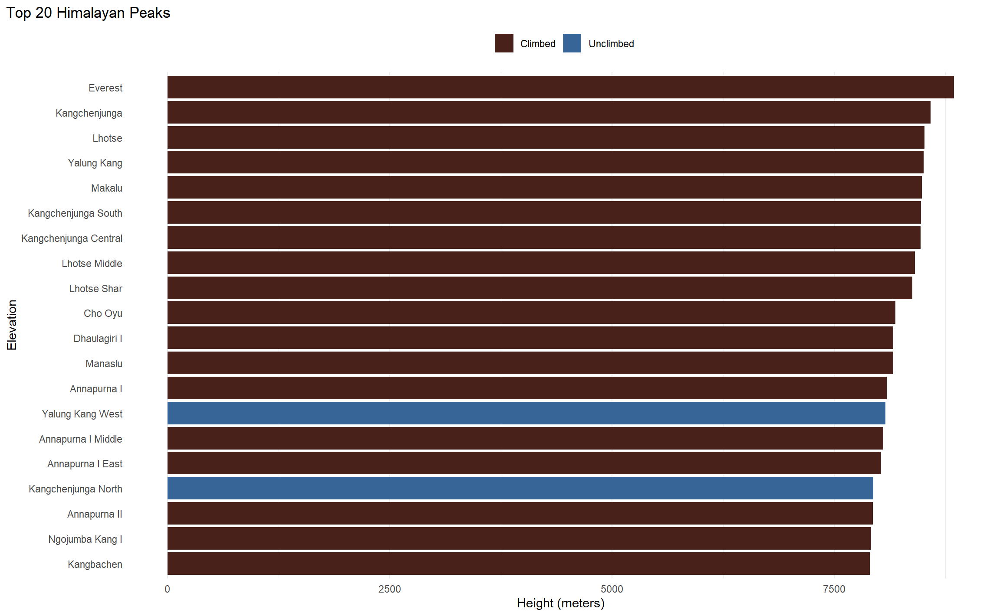
Let’s tidy some of the expeditions dataset
na_reasons <- c("Unknown",
"Attempt rumoured",
"Did not attempt climb",
"Did not reach base camp")
expeditions <- tt$expeditions %>%
mutate(time_to_highpoint = highpoint_date -
basecamp_date,
success = case_when(str_detect(termination_reason, "Success") ~ "Success",
termination_reason %in% na_reasons ~ "Other",
TRUE ~ "Failure"),
days_to_highpoint = as.integer(highpoint_date - basecamp_date))Other questions that could be posed and possible answered with this dataset:
Fraction of successful climbs per year
Rate of death over time, deadliest peaks, by mountain
Death causes and rate of injury
Distribution of duration of climbs versus the height or time
Correlation between frequency of expeditions and death rate
Which are the most dangerous peaks that have been climbed?
summarize_expeditions <- function(tbl){
tbl %>%
summarize(first_climb = min(year),
success_rate = mean(success == "Success"),
n_climbs = n(),
across(members:hired_staff_deaths, sum)) %>%
mutate(pct_death = member_deaths / members,
pct_hired_staff_deaths = hired_staff_deaths / hired_staff)
}
peak_summarized <- expeditions %>%
group_by(peak_id, peak_name) %>%
summarize_expeditions() %>%
ungroup() %>%
arrange(desc(n_climbs)) %>%
inner_join(peaks %>% select(peak_id, height_meters), by = "peak_id")`summarise()` regrouping output by 'peak_id' (override with `.groups` argument)What are the deadliest mountains?
Answering the question directly from the proportions may be misleading because some mountains have so few climbers.
Given the limited amount of data available on some mountains, the death rate is adjusted by adding the available priors from all climbing. The model could be further refined by regressing on information about oxygen use or other features.
For further reading: Introduction to Empirical Bayes: Examples from Baseball Statistics
library(ebbr)
# empirical bayes for binomials in R
peaks_eb<-peak_summarized %>%
filter(members >= 20) %>%
arrange(desc(pct_death)) %>%
add_ebb_estimate(member_deaths, members)
peaks_eb %>%
ggplot(aes(pct_death, .fitted))+
geom_point(aes(size = members))+
geom_abline(color = "red")+
scale_x_continuous(labels = scales::percent_format(accuracy = 1))+
scale_y_continuous(labels = percent_format(accuracy = 1))+
scale_color_continuous(trans = "log10")+
labs(x = "Death Rate (raw)",
y = "Adjusted Estimate of Death Rate using empirical Bayes",
title = "How much adjustment compression using priors?")+
theme(legend.position = c(0.8, 0.2))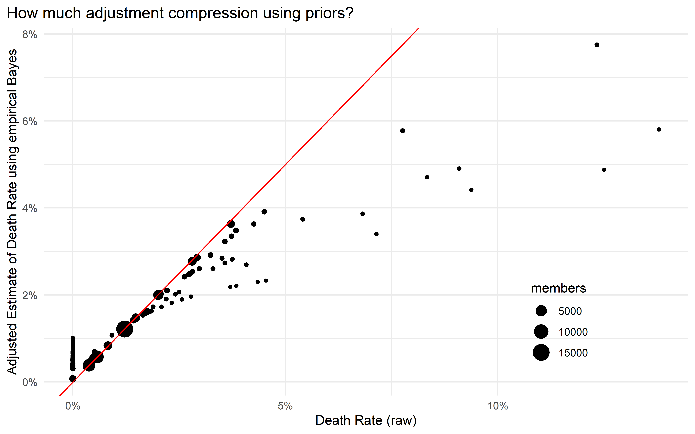
peaks_eb %>%
filter(members >= 500) %>%
arrange(desc(.fitted)) %>%
mutate(peak_name = fct_reorder(peak_name, .fitted)) %>%
ggplot(aes(.fitted, peak_name))+
geom_point(aes(size = members))+
geom_errorbarh(aes(xmin = .low, xmax = .high), color = "gray")+
expand_limits(x = 0)+
scale_x_continuous(labels = percent_format(accuracy = 1))+
labs(subtitle = "Estimate of Death Rate using empirical Bayes with 95% credible interval",
y = "", x = "",
title = "Deadliest Himalayan Peaks with more than 500 climbers",
caption = "Visual: @jim_gruman, Data: the Himalayan Database")+
theme(plot.title.position = "plot",
panel.grid.major.y = element_blank(),
legend.position = c(0.8, 0.2))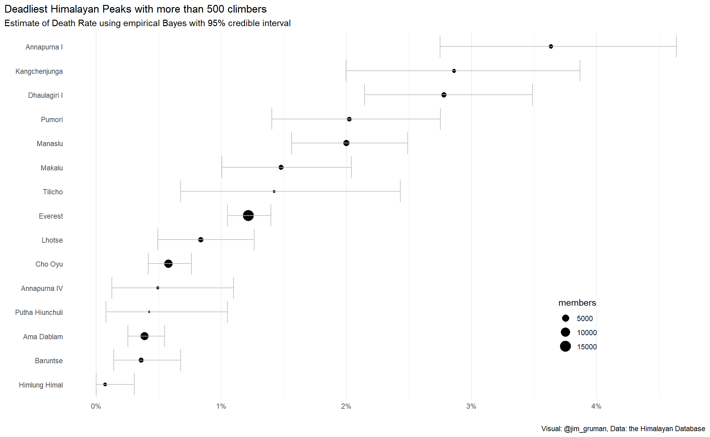
How does death rate relate to elevation?
peaks_eb %>%
filter(members >= 500) %>%
ggplot(aes(height_meters, .fitted))+
geom_point(aes(size = members))+
labs(title = "There does not appear to be a relationship between death rate and height")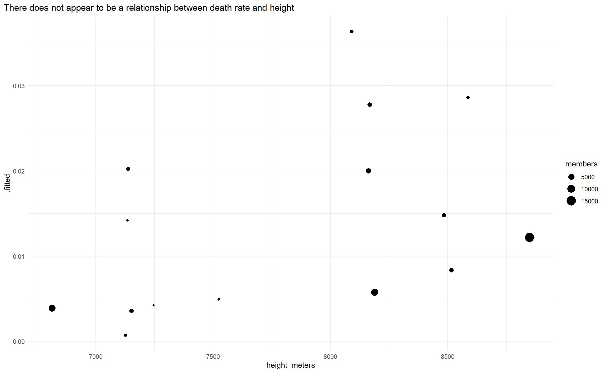
What is the distance between the base camp and the summit?
expeditions %>%
filter(success == "Success",
!is.na(days_to_highpoint),
!is.na(peak_name)) %>%
mutate(peak_name = fct_lump(peak_name, 10),
peak_name = fct_reorder(peak_name, days_to_highpoint, mean)) %>%
ggplot(aes(days_to_highpoint, peak_name))+
geom_boxplot()+
labs(title = "Duration to successfully summit the most popular Himalayan peaks",
caption = "Visual: @jim_gruman, Data: the Himalayan Database",
x = "Days from basecamp to summit",
y = "")+
theme(panel.grid.major.y = element_blank())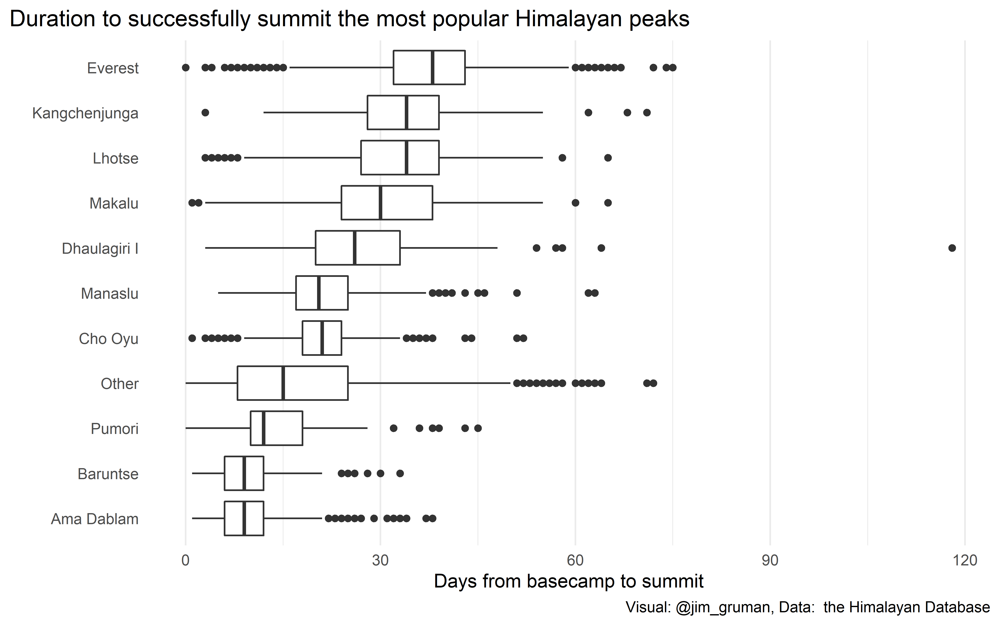
expeditions %>%
filter(peak_name == "Everest") %>%
ggplot(aes(days_to_highpoint, fill = success))+
geom_density(alpha = 0.3)+
scale_y_continuous(labels = percent_format(accuracy = 1))+
labs(title = "Duration to successfully summit Everest",
caption = "Visual: @jim_gruman, Data: the Himalayan Database",
x = "Days from basecamp to summit",
y = "Percentage",
fill = "")+
theme(panel.grid.major.y = element_blank(),
legend.position = c(0.6,0.5),
legend.background = element_rect(color = "white"))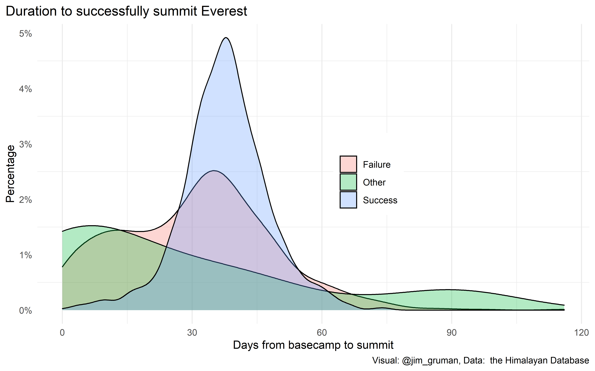
When have the Everest expeditions been successful?
expeditions %>%
ggplot(aes(year, fill = success))+
geom_histogram(alpha = 0.3)+
labs(title = "Year of Everest climbs",
caption = "Visual: @jim_gruman, Data: the Himalayan Database",
x = "Year",
y = "Climbers",
fill = "")+
theme(panel.grid.major.y = element_blank(),
legend.position = c(0.2,0.5),
legend.background = element_rect(color = "white"))`stat_bin()` using `bins = 30`. Pick better value with `binwidth`.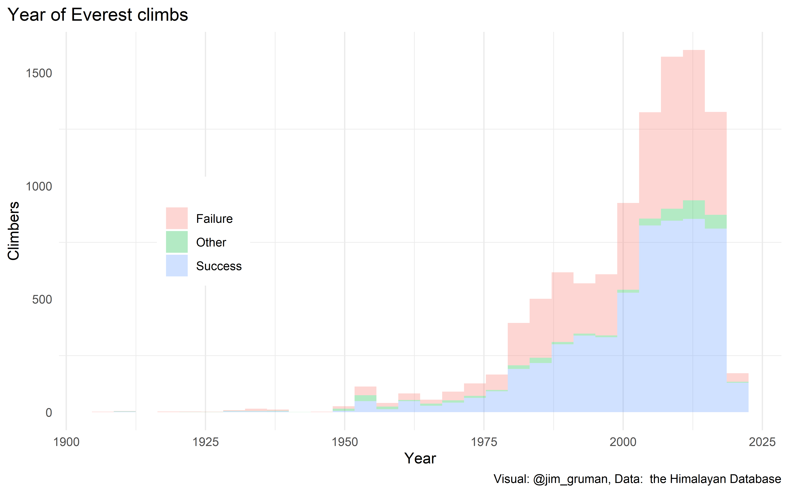
What is the median amount of time to climb?
everest_by_decade <- expeditions %>%
filter(peak_name == "Everest") %>%
mutate(decade = pmax(10 * (year %/% 10), 1970)) %>% # limp prior to 1970
group_by(decade, peak_name) %>%
summarize_expeditions() `summarise()` regrouping output by 'decade' (override with `.groups` argument)everest_by_decade %>%
ggplot(aes(decade, pct_death)) +
geom_line(aes(color = "All climbers"))+
geom_line(aes(y = pct_hired_staff_deaths, color = "Hired Staff")) +
geom_point(aes(color = "All climbers", size = members))+
geom_point(aes(y = pct_hired_staff_deaths, color = "Hired Staff", size = hired_staff)) +
scale_y_continuous(labels = percent_format(accuracy = .1))+
scale_x_continuous(breaks = seq(1970, 2010, 10),
labels = c("<= 1980",seq(1980, 2010, 10)))+
expand_limits(y = 0)+
labs(x = "Decade", color = "",
y = "Death Rate",
title = "Everest has been getting less deadly over time",
subtitle = "Though trends have reversed for hired staff",
size = "Number of climbers",caption = "Visual: @jim_gruman, Data: the Himalayan Database")+
theme(legend.position = c(0.2, 0.4),
legend.background = element_rect(color = "white"))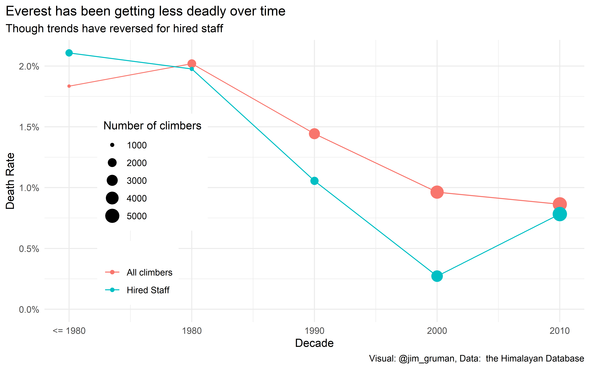
everest_by_decade %>%
ggplot(aes(decade, success_rate)) +
geom_line()+
geom_point(aes(size = n_climbs)) +
scale_y_continuous(labels = percent_format(accuracy = 1))+
scale_x_continuous(breaks = seq(1970, 2010, 10),
labels = c("<= 1980",seq(1980, 2010, 10)))+
expand_limits(y = 0)+
labs(x = "Decade",
y = "Success Rate",
title = "The Everest summit success rate has been increasing",
size = "Number of climbs",caption = "Visual: @jim_gruman, Data: the Himalayan Database")+
theme(legend.position = c(0.7, 0.3),
legend.background = element_rect(color = "white"))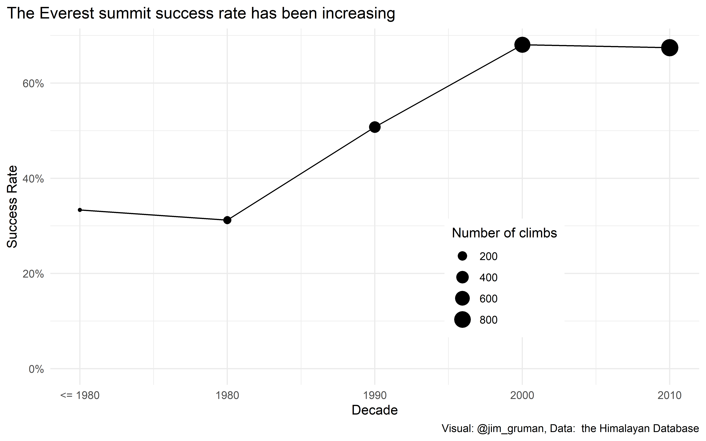
Examine the death probability per expedition member. What causes climber fatalities?
members <- tt$members
members %>%
count(died, death_cause) %>%
knitr::kable()| died | death_cause | n |
|---|---|---|
| FALSE | NA | 75413 |
| TRUE | AMS | 102 |
| TRUE | Avalanche | 369 |
| TRUE | Crevasse | 27 |
| TRUE | Disappearance (unexplained) | 49 |
| TRUE | Exhaustion | 41 |
| TRUE | Exposure / frostbite | 42 |
| TRUE | Fall | 331 |
| TRUE | Falling rock / ice | 26 |
| TRUE | Icefall collapse | 16 |
| TRUE | Illness (non-AMS) | 60 |
| TRUE | Other | 33 |
| TRUE | Unknown | 10 |
members %>%
count(sex) %>%
knitr::kable()| sex | n |
|---|---|
| F | 7044 |
| M | 69473 |
| NA | 2 |
For Everest, what are the significant features in predicting death?
library(broom)
members %>%
filter(peak_name == "Everest") %>%
mutate(expedition_role = fct_lump(expedition_role, 5)) %>%
glm(died ~ year + age + sex + expedition_role,
data = .,
family = "binomial") %>%
tidy() %>%
mutate(p.value = format.pval(p.value)) %>%
knitr::kable()| term | estimate | std.error | statistic | p.value |
|---|---|---|---|---|
| (Intercept) | 49.8368629 | 7.0523777 | 7.0666752 | 1.5869e-12 |
| year | -0.0276627 | 0.0035435 | -7.8066459 | 5.8730e-15 |
| age | 0.0182624 | 0.0066097 | 2.7629740 | 0.0057277 |
| sexM | 0.3353777 | 0.2907061 | 1.1536656 | 0.2486373 |
| expedition_roleDeputy Leader | -0.0639574 | 0.5124297 | -0.1248120 | 0.9006724 |
| expedition_roleExp Doctor | -0.1399287 | 0.4634403 | -0.3019346 | 0.7627019 |
| expedition_roleH-A Worker | 0.3469201 | 0.1625223 | 2.1346007 | 0.0327936 |
| expedition_roleLeader | 0.6033960 | 0.1852958 | 3.2563929 | 0.0011284 |
| expedition_roleOther | 0.0700387 | 0.2232777 | 0.3136842 | 0.7537609 |
The significant features include the year (lowers likelihood), the leader role (more likely to die), age (more likely to die), and the H-Aworker (much more likely to die)
members %>%
filter(peak_name == "Everest", !is.na(age)) %>%
group_by(age = 10 * (age %/% 10)) %>%
summarize(n_climbers = n(),
pct_death = mean(died)) %>%
knitr::kable()`summarise()` ungrouping output (override with `.groups` argument)| age | n_climbers | pct_death |
|---|---|---|
| 10 | 263 | 0.0076046 |
| 20 | 5258 | 0.0125523 |
| 30 | 8079 | 0.0120064 |
| 40 | 5001 | 0.0115977 |
| 50 | 1897 | 0.0147601 |
| 60 | 446 | 0.0269058 |
| 70 | 48 | 0.0000000 |
| 80 | 5 | 0.4000000 |
members %>%
filter(peak_name == "Everest", !is.na(age)) %>%
group_by(hired) %>%
summarize(n_climbers = n(),
pct_death = mean(died)) %>%
knitr::kable()`summarise()` ungrouping output (override with `.groups` argument)| hired | n_climbers | pct_death |
|---|---|---|
| FALSE | 14624 | 0.0121718 |
| TRUE | 6373 | 0.0136513 |
It seems that expedition role H-A worker may be confounded with hired in some funky way
What happens when oxygen is included?
model <- members %>%
filter(peak_name == "Everest", !is.na(age)) %>%
mutate(leader = expedition_role == "Leader") %>%
glm(died ~ year + age + sex + leader + hired + oxygen_used,
data = .,
family = "binomial")
model %>%
tidy(conf.int = TRUE, exponentiate = TRUE) %>%
filter(term != "(Intercept)") %>%
mutate(term = fct_reorder(term, estimate)) %>%
ggplot(aes(estimate, term)) +
geom_point() +
geom_errorbarh(aes(xmin = conf.low, xmax = conf.high), color = "gray") +
geom_vline(xintercept = 1, color = "red")+
labs(title = "Relative risk factors for death on Everest summits",
caption = "Visual: @jim_gruman, Data: the Himalayan Database",
x = "Exponentiated estimate for log odds")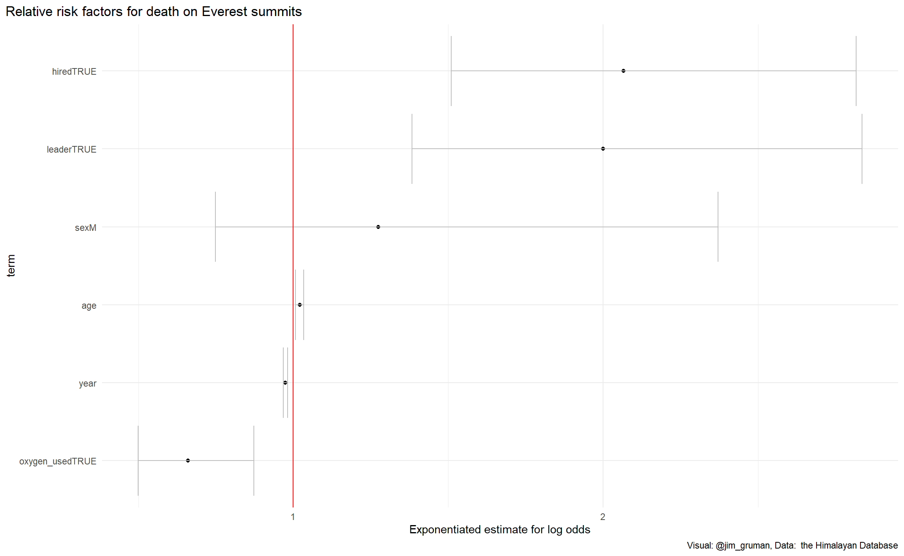
There may be an interaction, where added risk to hired workers is associated with climbing expeditions that use oxygen (maybe due to carrying the tanks). Maybe explore it further next time.Calculate proportion of female climbers per peak per year
top_peaks <- members %>%
count(peak_name, sort = TRUE) %>%
slice(1:20) %>%
pull(peak_name)
prop_women<- members %>%
filter(peak_name %in% top_peaks) %>%
count(peak_name, year, sex) %>%
pivot_wider(names_from = sex, values_from = n, names_prefix = "num_") %>%
replace_na(list(num_F = 0)) %>%
mutate(prop_F = num_F/(num_M + num_F),
total_peeps = num_M + num_F) %>%
arrange(year)Calculate proportion of female climbers per peak per year
prop_women<- members %>%
filter(peak_name %in% top_peaks) %>%
count(peak_name, year, sex) %>%
pivot_wider(names_from = sex, values_from = n, names_prefix = "num_") %>%
replace_na(list(num_F = 0)) %>%
mutate(prop_F = num_F/(num_M + num_F),
total_peeps = num_M + num_F) %>%
arrange(year)Inspired by Danielle Ferraro @dm_ferraro
# Set palette
cols <- paletteer_d("wesanderson::Zissou1")
# Plot
ggplot(prop_women, aes(x = year, y = factor(peak_name, levels = rev(top_peaks)))) +
geom_point(aes(size = total_peeps, color = prop_F), alpha = 0.7) +
scale_color_stepsn(colors = cols, n.breaks = 4, labels = scales::percent_format(accuracy = 1)) +
scale_x_continuous(breaks = seq(1900, 2010, by = 10)) +
labs(x = NULL,
y = NULL,
size = "Total expedition\nmembers",
color = "Percentage of\nwomen",
title = "Women on Himalayan climbing expeditions",
subtitle = "Each point represents the number of expedition members and percentage of women on that peak for that year",
caption = "Data: The Himalayan Database\nFigure by @jim_gruman for #TidyTuesday") +
# theme_ipsum_rc() +
dark_theme_gray(base_size = 14, base_family = "ArialNarrow") +
theme(plot.background = element_rect(fill = "grey10"),
panel.background = element_blank(),
panel.grid.major = element_line(color = "grey30", size = 0.2),
panel.grid.minor = element_line(color = "grey30", size = 0.2),
panel.grid.major.x = element_blank(),
panel.grid.minor.x = element_blank(),
legend.background = element_blank(),
axis.ticks = element_blank(),
legend.key = element_blank(),
plot.title = element_text(size = 22),
plot.title.position = "plot"
)Inverted geom defaults of fill and color/colour.
To change them back, use invert_geom_defaults().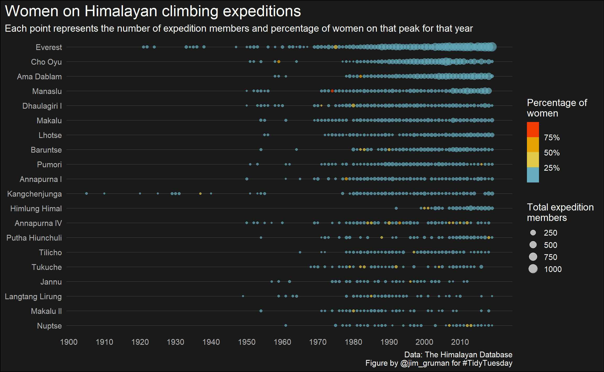
Strategies for handling class imbalances
Let’s make one last exploratory plot and look at seasons. How much difference is there in survival across the four seasons?
members %>%
filter(season != "Unknown") %>%
count(season, died) %>%
group_by(season) %>%
mutate(
percent = n / sum(n),
died = case_when(
died ~ "Died",
TRUE ~ "Did not die"
)
) %>%
ggplot(aes(season, percent, fill = season)) +
geom_col(alpha = 0.8, position = "dodge", show.legend = FALSE) +
scale_y_continuous(labels = scales::percent_format()) +
facet_wrap(~died, scales = "free") +
labs(x = NULL, y = "% of expedition members")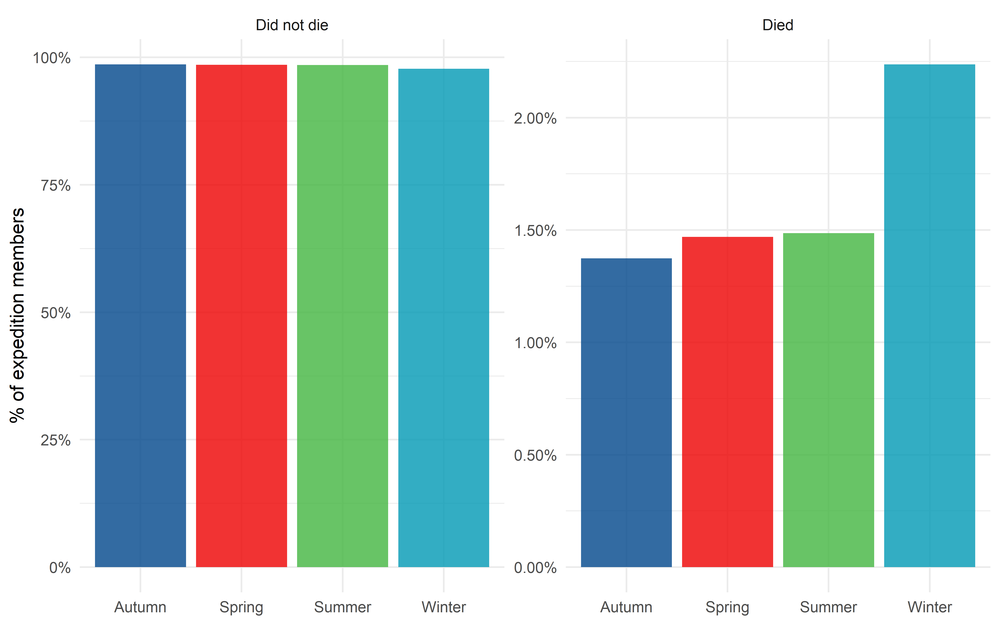
Let’s now create the dataset that we’ll use for modeling by filtering on some of the variables and transforming some variables to a be factors. There are still lots of NA values for age but we are going to impute those.
members_df <- members %>%
filter(season != "Unknown", !is.na(sex), !is.na(citizenship)) %>%
select(peak_id, year, season, sex, age, citizenship, hired, success, died) %>%
mutate(died = case_when(
died ~ "died",
TRUE ~ "survived"
)) %>%
mutate_if(is.character, factor) %>%
mutate_if(is.logical, as.integer)We can start by loading the tidymodels metapackage, and splitting our data into training and testing sets.
library(tidymodels)-- Attaching packages ---------- tidymodels 0.1.1 --v dials 0.0.9 v rsample 0.0.8
v infer 0.5.3 v tune 0.1.1
v modeldata 0.0.2 v workflows 0.2.0
v parsnip 0.1.3 v yardstick 0.0.7
v recipes 0.1.13 -- Conflicts ------------- tidymodels_conflicts() --
x scales::discard() masks purrr::discard()
x dplyr::filter() masks stats::filter()
x recipes::fixed() masks stringr::fixed()
x dplyr::lag() masks stats::lag()
x yardstick::spec() masks readr::spec()
x recipes::step() masks stats::step()members_split <- initial_split(members_df, strata = died)
members_train <- training(members_split)
members_test <- testing(members_split)We are going to use resampling to evaluate model performance.
members_folds <- vfold_cv(members_train, strata = died)Next we build a recipe for data preprocessing.
First, we must tell the recipe() what our model is going to be (using a formula here) and what our training data is.
Next, we impute the missing values for age using the median age in the training data set. There are more complex steps available for imputation, but we’ll stick with a straightforward option here.
Next, we use step_other() to collapse categorical levels for peak and citizenship. Before this step, there were hundreds of values in each variable.
After this, we can create indicator variables for the non-numeric, categorical values, except for the outcome died which we need to keep as a factor.
Finally, there are many more people who survived their expedition than who died (thankfully) so we will use step_smote() to balance the classes.
The object members_rec is a recipe that has not been trained on data yet (for example, which categorical levels should be collapsed has not been calculated).
library(themis)Registered S3 methods overwritten by 'themis':
method from
bake.step_downsample recipes
bake.step_upsample recipes
prep.step_downsample recipes
prep.step_upsample recipes
tidy.step_downsample recipes
tidy.step_upsample recipes
Attaching package: 'themis'The following objects are masked from 'package:recipes':
step_downsample, step_upsample, tunable.step_downsample,
tunable.step_upsamplemembers_rec <- recipe(died ~ ., data = members_train) %>%
step_medianimpute(age) %>%
step_other(peak_id, citizenship) %>%
step_dummy(all_nominal(), -died) %>%
step_smote(died)
members_recData Recipe
Inputs:
role #variables
outcome 1
predictor 8
Operations:
Median Imputation for age
Collapsing factor levels for peak_id, citizenship
Dummy variables from all_nominal(), -died
SMOTE based on diedWe’re going to use this recipe in a workflow() so we don’t need to stress a lot about whether to prep() or not. If you want to explore the what the recipe is doing to your data, you can first prep() the recipe to estimate the parameters needed for each step and then bake(new_data = NULL) to pull out the training data with those steps applied.
Let’s compare two different models, a logistic regression model and a random forest model. We start by creating the model specifications.
glm_spec <- logistic_reg() %>%
set_engine("glm")
glm_specLogistic Regression Model Specification (classification)
Computational engine: glm rf_spec <- rand_forest(trees = 1000) %>%
set_mode("classification") %>%
set_engine("ranger")
rf_specRandom Forest Model Specification (classification)
Main Arguments:
trees = 1000
Computational engine: ranger Next let’s start putting together a tidymodelsworkflow(), a helper object to help manage modeling pipelines with pieces that fit together like Lego blocks. Notice that there is no model yet: Model: None.
members_wf <- workflow() %>%
add_recipe(members_rec)
members_wf== Workflow ========================================
Preprocessor: Recipe
Model: None
-- Preprocessor ------------------------------------
4 Recipe Steps
* step_medianimpute()
* step_other()
* step_dummy()
* step_smote()Now we can add a model, and the fit to each of the resamples. First, we can fit the logistic regression model. Let’s set a non-default metric set so we can add sensitivity and specificity.
members_metrics <- metric_set(roc_auc, accuracy, sensitivity, specificity)
# doParallel::registerDoParallel()
glm_rs <- members_wf %>%
add_model(glm_spec) %>%
fit_resamples(
resamples = members_folds,
metrics = members_metrics,
control = control_resamples(save_pred = TRUE)
)
glm_rs# Resampling results
# 10-fold cross-validation using stratification
# A tibble: 10 x 5
splits id .metrics .notes .predictions
<list> <chr> <list> <list> <list>
1 <split [51.6K/5.7K~ Fold01 <tibble [4 x 3~ <tibble [0 x ~ <tibble [5,739 x 5~
2 <split [51.6K/5.7K~ Fold02 <tibble [4 x 3~ <tibble [0 x ~ <tibble [5,738 x 5~
3 <split [51.6K/5.7K~ Fold03 <tibble [4 x 3~ <tibble [0 x ~ <tibble [5,738 x 5~
4 <split [51.6K/5.7K~ Fold04 <tibble [4 x 3~ <tibble [0 x ~ <tibble [5,738 x 5~
5 <split [51.6K/5.7K~ Fold05 <tibble [4 x 3~ <tibble [0 x ~ <tibble [5,738 x 5~
6 <split [51.6K/5.7K~ Fold06 <tibble [4 x 3~ <tibble [0 x ~ <tibble [5,738 x 5~
7 <split [51.6K/5.7K~ Fold07 <tibble [4 x 3~ <tibble [0 x ~ <tibble [5,738 x 5~
8 <split [51.6K/5.7K~ Fold08 <tibble [4 x 3~ <tibble [0 x ~ <tibble [5,738 x 5~
9 <split [51.6K/5.7K~ Fold09 <tibble [4 x 3~ <tibble [0 x ~ <tibble [5,738 x 5~
10 <split [51.6K/5.7K~ Fold10 <tibble [4 x 3~ <tibble [0 x ~ <tibble [5,738 x 5~Second, we can fit the random forest model.
rf_rs <- members_wf %>%
add_model(rf_spec) %>%
fit_resamples(
resamples = members_folds,
metrics = members_metrics,
control = control_resamples(save_pred = TRUE)
)
rf_rs# Resampling results
# 10-fold cross-validation using stratification
# A tibble: 10 x 5
splits id .metrics .notes .predictions
<list> <chr> <list> <list> <list>
1 <split [51.6K/5.7K~ Fold01 <tibble [4 x 3~ <tibble [0 x ~ <tibble [5,739 x 5~
2 <split [51.6K/5.7K~ Fold02 <tibble [4 x 3~ <tibble [0 x ~ <tibble [5,738 x 5~
3 <split [51.6K/5.7K~ Fold03 <tibble [4 x 3~ <tibble [0 x ~ <tibble [5,738 x 5~
4 <split [51.6K/5.7K~ Fold04 <tibble [4 x 3~ <tibble [0 x ~ <tibble [5,738 x 5~
5 <split [51.6K/5.7K~ Fold05 <tibble [4 x 3~ <tibble [0 x ~ <tibble [5,738 x 5~
6 <split [51.6K/5.7K~ Fold06 <tibble [4 x 3~ <tibble [0 x ~ <tibble [5,738 x 5~
7 <split [51.6K/5.7K~ Fold07 <tibble [4 x 3~ <tibble [0 x ~ <tibble [5,738 x 5~
8 <split [51.6K/5.7K~ Fold08 <tibble [4 x 3~ <tibble [0 x ~ <tibble [5,738 x 5~
9 <split [51.6K/5.7K~ Fold09 <tibble [4 x 3~ <tibble [0 x ~ <tibble [5,738 x 5~
10 <split [51.6K/5.7K~ Fold10 <tibble [4 x 3~ <tibble [0 x ~ <tibble [5,738 x 5~We have fit each of our candidate models to our resampled training set!
Let’s check out how we did
collect_metrics(glm_rs) %>% knitr::kable()| .metric | .estimator | mean | n | std_err |
|---|---|---|---|---|
| accuracy | binary | 0.6162668 | 10 | 0.0028445 |
| roc_auc | binary | 0.6966390 | 10 | 0.0120650 |
| sens | binary | 0.6752783 | 10 | 0.0232296 |
| spec | binary | 0.6153328 | 10 | 0.0030006 |
Well, this is middling but at least mostly consistent for the positive and negative classes. The function collect_metrics() extracts and formats the .metrics column from resampling results like the ones we have here.
collect_metrics(rf_rs) %>% knitr::kable()| .metric | .estimator | mean | n | std_err |
|---|---|---|---|---|
| accuracy | binary | 0.9699726 | 10 | 0.0008112 |
| roc_auc | binary | 0.7467396 | 10 | 0.0103049 |
| sens | binary | 0.1517896 | 10 | 0.0163523 |
| spec | binary | 0.9817907 | 10 | 0.0008023 |
The accuracy is great but that sensitivity is not what we’d like to see. The random forest model has not done a great job of learning how to recognize both classes, even with our oversampling strategy. Let’s dig deeper into how these models are doing to see this more. For example, how are they predicting the two classes?
glm_rs %>%
conf_mat_resampled() %>% knitr::kable()| Prediction | Truth | Freq |
|---|---|---|
| died | died | 55.8 |
| died | survived | 2175.7 |
| survived | died | 26.2 |
| survived | survived | 3480.4 |
rf_rs %>%
conf_mat_resampled()%>% knitr::kable()| Prediction | Truth | Freq |
|---|---|---|
| died | died | 12.7 |
| died | survived | 103.0 |
| survived | died | 69.3 |
| survived | survived | 5553.1 |
The random forest model is quite bad at identifying which expedition members died, while the logistic regression model does about the same for both classes.
We can also make an ROC curve.
glm_rs %>%
collect_predictions() %>%
group_by(id) %>%
roc_curve(died, .pred_died) %>%
ggplot(aes(1 - specificity, sensitivity, color = id)) +
geom_abline(lty = 2, color = "gray80", size = 1.5) +
geom_path(show.legend = FALSE, alpha = 0.6, size = 1.2) +
coord_equal()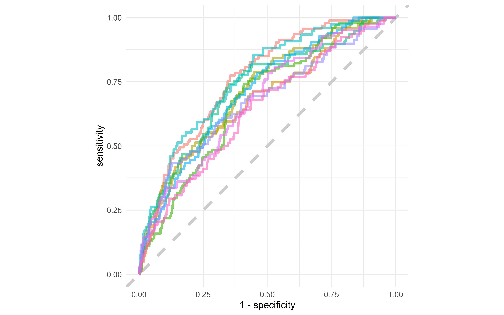
It is finally time for us to return to the testing set. Notice that we have not used the testing set yet during this whole analysis; to compare and assess models we used resamples of the training set. Let’s fit one more time to the training data and evaluate on the testing data using the function last_fit().
members_final <- members_wf %>%
add_model(glm_spec) %>%
last_fit(members_split)
members_final# Resampling results
# Monte Carlo cross-validation (0.75/0.25) with 1 resamples
# A tibble: 1 x 6
splits id .metrics .notes .predictions .workflow
<list> <chr> <list> <list> <list> <list>
1 <split [57.4K~ train/test~ <tibble [2 ~ <tibble [0~ <tibble [19,126~ <workflo~The metrics and predictions here are on the testing data.
collect_metrics(members_final) %>% knitr::kable()| .metric | .estimator | .estimate |
|---|---|---|
| accuracy | binary | 0.6152881 |
| roc_auc | binary | 0.7038210 |
collect_predictions(members_final) %>%
conf_mat(died, .pred_class) Truth
Prediction died survived
died 197 7269
survived 89 11571The coefficients (which we can get out using tidy()) have been estimated using the training data. If we use exponentiate = TRUE, we have odds ratios.
members_final %>%
pull(.workflow) %>%
pluck(1) %>%
tidy(exponentiate = TRUE) %>%
arrange(estimate) %>%
knitr::kable(digits = 4)| term | estimate | std.error | statistic | p.value |
|---|---|---|---|---|
| (Intercept) | 0.0000 | 0.9287 | -57.5190 | 0.0000 |
| peak_id_other | 0.2500 | 0.0331 | -41.8148 | 0.0000 |
| peak_id_MANA | 0.2614 | 0.0413 | -32.4872 | 0.0000 |
| peak_id_EVER | 0.3109 | 0.0352 | -33.2267 | 0.0000 |
| hired | 0.4536 | 0.0559 | -14.1455 | 0.0000 |
| sex_M | 0.5426 | 0.0291 | -21.0448 | 0.0000 |
| citizenship_other | 0.7798 | 0.0305 | -8.1529 | 0.0000 |
| season_Winter | 0.8861 | 0.0415 | -2.9155 | 0.0036 |
| peak_id_CHOY | 0.9002 | 0.0412 | -2.5529 | 0.0107 |
| citizenship_Japan | 0.9125 | 0.0365 | -2.5092 | 0.0121 |
| age | 0.9930 | 0.0007 | -9.7566 | 0.0000 |
| season_Spring | 1.0163 | 0.0155 | 1.0429 | 0.2970 |
| year | 1.0281 | 0.0005 | 59.5007 | 0.0000 |
| citizenship_Nepal | 1.1354 | 0.0626 | 2.0304 | 0.0423 |
| citizenship_UK | 1.7031 | 0.0427 | 12.4820 | 0.0000 |
| citizenship_USA | 1.8845 | 0.0420 | 15.0864 | 0.0000 |
| success | 2.0471 | 0.0158 | 45.3355 | 0.0000 |
| season_Summer | 4.9691 | 0.0855 | 18.7446 | 0.0000 |
we can also visualize the results.
members_final %>%
pull(.workflow) %>%
pluck(1) %>%
tidy() %>%
filter(term != "(Intercept)") %>%
ggplot(aes(estimate, fct_reorder(term, estimate))) +
geom_vline(xintercept = 0, color = "gray50", lty = 2, size = 1.2) +
geom_errorbar(aes(
xmin = estimate - std.error,
xmax = estimate + std.error
),
width = .2, color = "gray50", alpha = 0.7
) +
geom_point(size = 2, color = "#85144B") +
labs(y = NULL, x = "Coefficent from logistic regression")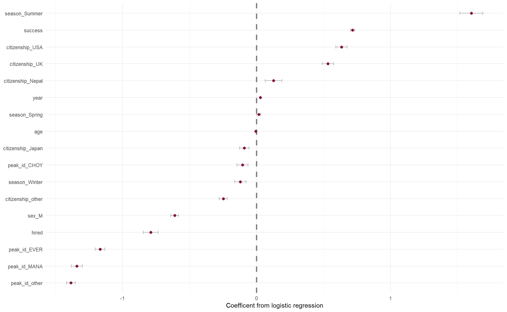
The features with coefficients on the positive side (like climbing in summer, being on a successful expedition, or being from the UK or US) are associated with surviving.
The features with coefficients on the negative side (like climbing specific peaks including Everest, being one of the hired members of a expedition, or being a man) are associated with dying.
Remember that we have to interpret model coefficients like this in light of the predictive accuracy of our model, which was somewhat middling; there are more factors at play in who survives these expeditions than what we have accounted for in the model directly. Also note that we see evidence in this model for how dangerous it is to be a native Sherpa climber in Nepal, hired as an expedition member.
sessionInfo()R version 4.0.0 (2020-04-24)
Platform: x86_64-w64-mingw32/x64 (64-bit)
Running under: Windows 10 x64 (build 19041)
Matrix products: default
locale:
[1] LC_COLLATE=English_United States.1252
[2] LC_CTYPE=English_United States.1252
[3] LC_MONETARY=English_United States.1252
[4] LC_NUMERIC=C
[5] LC_TIME=English_United States.1252
attached base packages:
[1] stats graphics grDevices utils datasets methods base
other attached packages:
[1] themis_0.1.2 yardstick_0.0.7 workflows_0.2.0
[4] tune_0.1.1 rsample_0.0.8 recipes_0.1.13
[7] parsnip_0.1.3 modeldata_0.0.2 infer_0.5.3
[10] dials_0.0.9 tidymodels_0.1.1 broom_0.7.0
[13] ebbr_0.1 gt_0.2.2 ggdark_0.2.1
[16] paletteer_1.2.0.9000 scales_1.1.1 forcats_0.5.0
[19] stringr_1.4.0 dplyr_1.0.2 purrr_0.3.4
[22] readr_1.3.1 tidyr_1.1.2 tibble_3.0.3
[25] ggplot2_3.3.2 tidyverse_1.3.0 workflowr_1.6.2
loaded via a namespace (and not attached):
[1] VGAM_1.1-3 colorspace_1.4-1 selectr_0.4-2
[4] ellipsis_0.3.1 class_7.3-17 rprojroot_1.3-2
[7] fs_1.5.0 rstudioapi_0.11 listenv_0.8.0
[10] furrr_0.1.0 farver_2.0.3 ParamHelpers_1.14
[13] prodlim_2019.11.13 fansi_0.4.1 lubridate_1.7.9
[16] ranger_0.12.1 xml2_1.3.2 codetools_0.2-16
[19] splines_4.0.0 doParallel_1.0.15 knitr_1.30
[22] jsonlite_1.7.1 pROC_1.16.2 dbplyr_1.4.4
[25] compiler_4.0.0 httr_1.4.2 backports_1.1.10
[28] assertthat_0.2.1 Matrix_1.2-18 lazyeval_0.2.2
[31] cli_2.0.2 later_1.1.0.1 htmltools_0.5.0
[34] tools_4.0.0 gtable_0.3.0 glue_1.4.2
[37] RANN_2.6.1 parallelMap_1.5.0 fastmatch_1.1-0
[40] Rcpp_1.0.5 cellranger_1.1.0 DiceDesign_1.8-1
[43] vctrs_0.3.4 iterators_1.0.12 timeDate_3043.102
[46] mlr_2.17.1 xfun_0.17 gower_0.2.2
[49] globals_0.13.0 rvest_0.3.6 lifecycle_0.2.0
[52] future_1.19.1 MASS_7.3-53 ipred_0.9-9
[55] hms_0.5.3 promises_1.1.1 parallel_4.0.0
[58] rematch2_2.1.2 BBmisc_1.11 prismatic_0.2.0
[61] yaml_2.2.1 curl_4.3 rpart_4.1-15
[64] stringi_1.5.3 highr_0.8 foreach_1.5.0
[67] checkmate_2.0.0 lhs_1.0.2 hardhat_0.1.4
[70] lava_1.6.7 rlang_0.4.7 pkgconfig_2.0.3
[73] evaluate_0.14 lattice_0.20-41 labeling_0.3
[76] tidyselect_1.1.0 plyr_1.8.6 magrittr_1.5
[79] tidytuesdayR_1.0.1 R6_2.4.1 generics_0.0.2
[82] DBI_1.1.0 pillar_1.4.6 haven_2.3.1
[85] whisker_0.4 withr_2.3.0 survival_3.2-3
[88] nnet_7.3-14 ROSE_0.0-3 modelr_0.1.8
[91] crayon_1.3.4 utf8_1.1.4 unbalanced_2.0
[94] rmarkdown_2.3 usethis_1.6.3 grid_4.0.0
[97] readxl_1.3.1 data.table_1.13.0 FNN_1.1.3
[100] blob_1.2.1 git2r_0.27.1 reprex_0.3.0
[103] digest_0.6.25 httpuv_1.5.4 stats4_4.0.0
[106] munsell_0.5.0 GPfit_1.0-8